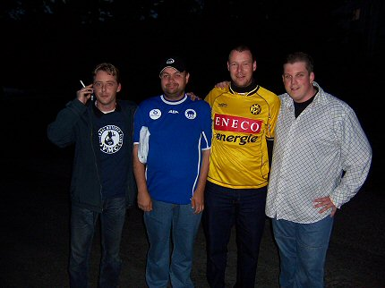
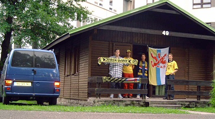
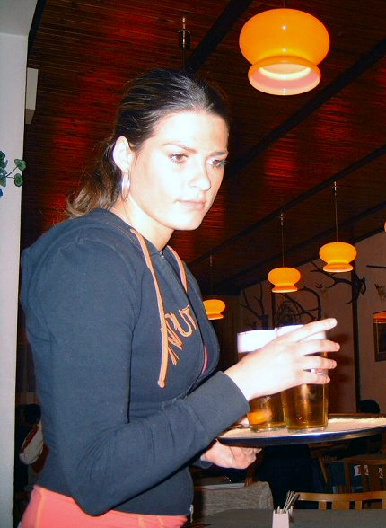
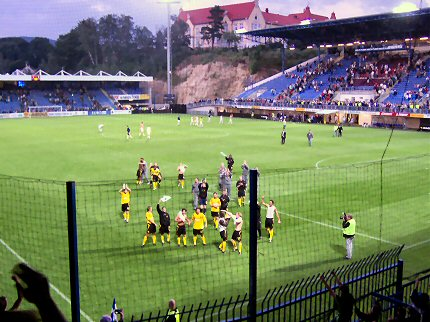
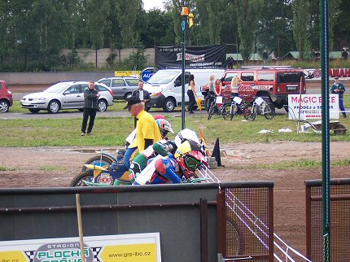
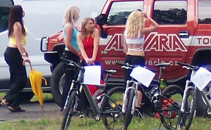
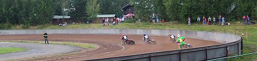
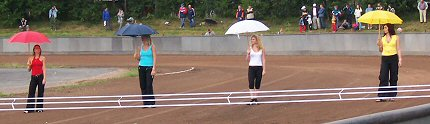
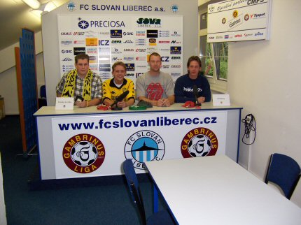
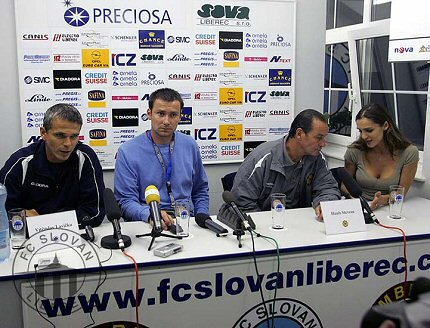

|
Slovan Liberec - Roda JC (third cut) |
Slovan
Liberec - Roda JC (third cut)

Krujer en consorten hebben een Liberec-fan te pakken.
Ze waren de enige
Rodasupporters die op de camping overnachtten.

Krujer Erik Hans Danny voor hun chalet op Autocamp
Pavlovice.

Dit was de vaste bierjuf van de Hoensbroekse camping-gasten.

Na het voetbal wachtte er meer sport en vertier.

Op de camping was namelijk ook een motorcross-baan.

De plaatselijke pits-poezen.

Gaaaaaaaaaaaaaas.....

Na de race start de 800 meter paraplu-loop.

Als dit viertal wist wie hier later zou gaan plaatsnemen....

....waren ze zeker gebleven :-)))
Foto's: Krujer&co. m.u.z. van laatste foto: bron: www.fcslovanliberec.cz